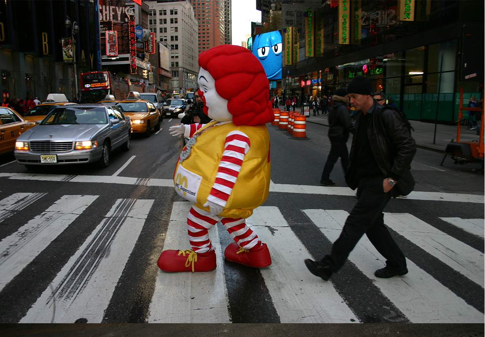
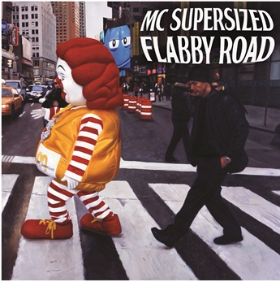
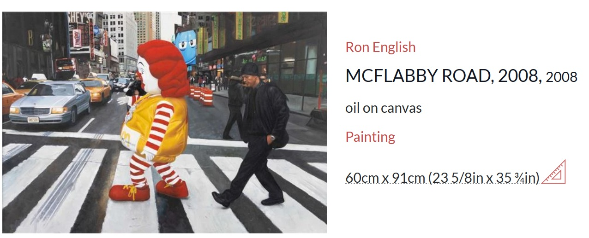
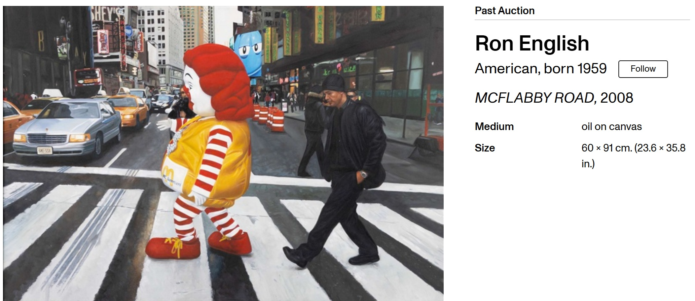
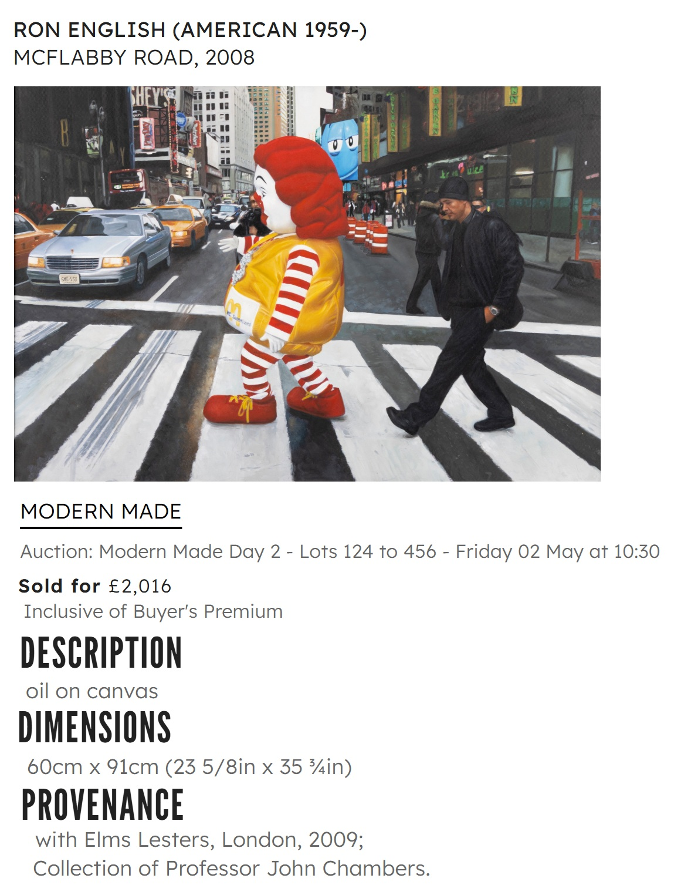

Exhibitions
The ADAM and RON Show, Elms Lesters Painting Rooms, London, UK, May 3–30, 2008.
Literature
Elms Lesters Painting Rooms, The Adam and Ron Show (London: Elms Lesters Painting Rooms, 2008), exhibition catalogue / book.
Ron English, Status Factory: The Art of Ron English (San Francisco: Last Gasp of San Francisco, 2014), p. 74. ISBN 978-0867197891.
Ron English, Fauxlosophy: The Art of Ron English (San Francisco: Last Gasp, 2016), p. 116. ISBN 978-0867196566.
Ron English, Original Grin: The Art of Ron English (Paris: Cernunnos, 2019), p. 88. ISBN 978-2374950938.
Notes
Also known as Flabby Road.
This work references Ronald McDonald.
This work references the Beatles’ album cover for Abbey Road.
This composition was later repurposed by the artist as a limited-edition print in the Vinyl Chord: A Revolutionary Record Store series.
Ancillary Documentation
The following materials document source imagery, live-model reference material, related print use, and third-party artwork-page documentation associated with the work.





